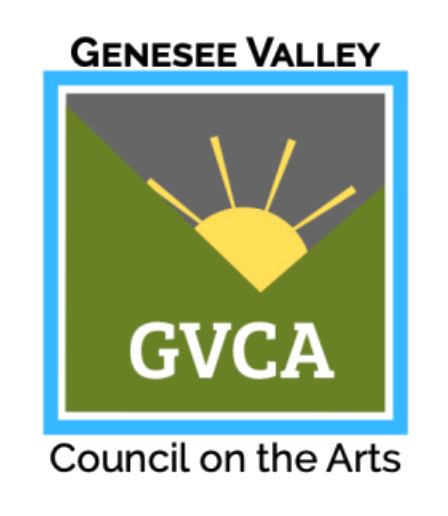

⚠⚠ this page is a work in progress ⚠⚠
intro
I was interested in making a new game about navigating family functions like holidays and birthdays as a young queer person (the working title up to a certain point was "all day holiday") and wanted to make 3D scans of my childhood home for use in a series of interactive, autobiographical Unity scenes. With support from the Genesee Valley Council of the Arts, I was able to purchase a drone for photogrammetry, and began practicing by making scans of all the rooms inside Visual Studies Workshop. Initially, I was embarrassed to use the drone around other people. It's loud, disruptive, kicks up 100 year old dust, and is inherently of surveillance. I had to wear a mask when I flew the drone indoors because the dust hurt my face. In VSW alone I took over 10 thousand photographs with the drone, amassing gigabytes of visual information, images of floor tiles, blank walls, corners, a third of a book shelf.
various obsessions
Scanning and creating OBJs quickly outgrew the original idea -- with a moodboard of Paul Berger, Dancing Eyes, and g**gle maps, I obsessively created scans of all my environments, indoors and outdoors, work, home, the neighborhood, sacred objects, teddy bears, and toys.
closing the gap between the body and what's beyond the screen
bedrooms and bathrooms
non-extractive photography
visual studies workshop
self-portraits
recording of my body in space for use in interactive software
performative play
mighty max
When recording in my childhood bedroom, I was recalled to the Mighy Max playsets from my very early youth. After digging them up from my parents' basement, several things were revealed: my love of skeletons originates with the Mighty Max playset designs (environmental storytelling, lol); the original playsets are sticky -- baby food, clay, bodily fluids, sticky hands, shit, snot, sweat, blood. I end up having to wash my hands several times when handling them; by scanning the playsets, I'm able to transport myself back into this pre-established world of intricate violence, demonic surfaces, pools of blood.
process marks
I've always been interested in the ancillary process marks of digital workflows, the spaces between the sprites on the sheet, overscan artifacts in scrolling games, polygon seams, clipping beyond the illusory wall.
I fell in love with the texture maps associated with the OBJs I was generating in 2019, when I started making 3D scans of my teddy bears (the giant 3D Lovey still hangs in the air in my first Unity test world). To see Lovey, every side of him at once, cubist xmas wrapping paper, was fantastic, spatially electric, colors and patterns.
The anatomy of the OBJ lends itself to manipulation, glitches, texture swaps, hand-made gestures. Like the spritesheet, the texture map is a site for experimentation, a tool for looking at the whole.
Mighty Max in particular feels relevant here, as I distinctly remember opening the packaging of each playset and being interested in the resulting gray space where the glue ripped the cardboard coloring off, empty space, a footprint of the clear plastic window. Often, Max and friends would traverse the flat plane, two-dimensional, recursive space.
I'd like to make a book of the best ones.
 This project is made possible with funds from the Statewide Community Regrants Program, a regrant program of the New York State Council on the Arts with the support of The Office of the Governor and the New York State Legislature and administered by the Genesee Valley Council on the Arts.
nilson carroll